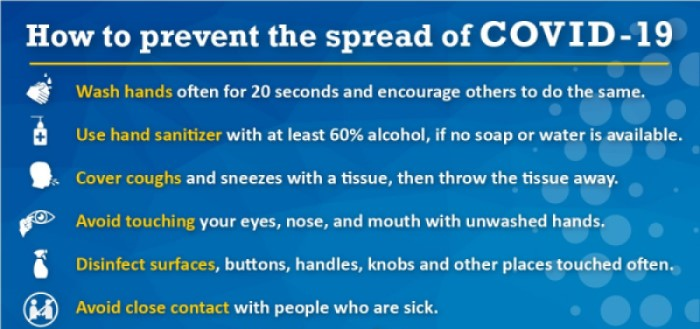
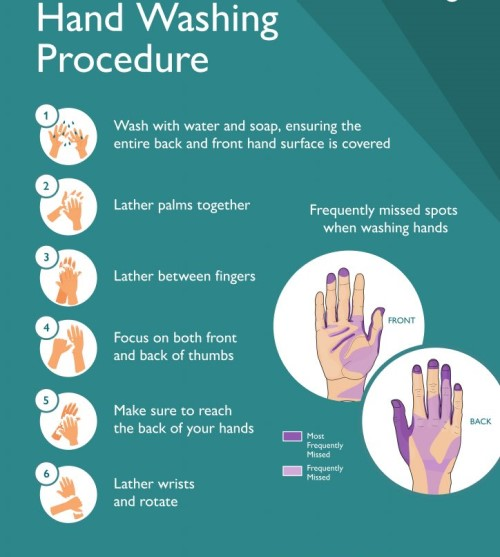
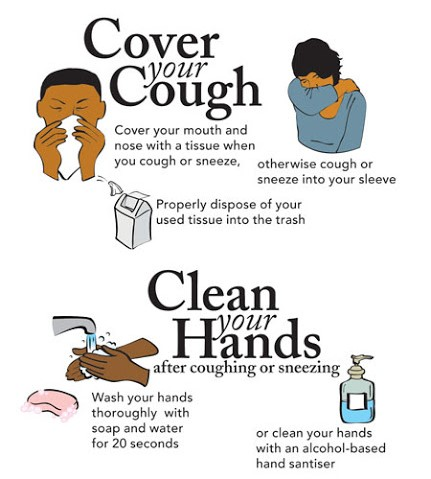

Preventive measures to reduce the chances of infection include staying at home, avoiding crowded places, keeping distance from others, washing hands with soap and water often and for at least 20 seconds, practising good respiratory hygiene, and avoiding touching the eyes, nose, or mouth with unwashed hands.

Proper hand washing is recommended to avoid entry of germs into our body.

The CDC recommends covering the mouth and nose with a tissue when coughing or sneezing and recommends using the inside of the elbow if no tissue is available. Proper hand hygiene after any cough or sneeze is encouraged.

The CDC has recommended the use of cloth face coverings in public settings where other social distancing measures are difficult to maintain, in part to limit transmission by asymptomatic individuals.